釣行記TRIP REPORT
■ プロローグ ― 常磐道、エンプティロード
19:00、谷田部ICから北へ。ハンドルはガキオヤRin。車内にはナガヨシリンプレイヤーから、いつもの通り誰かをディスる曲が大音量で流れている。下り線はいつも通りガラ空きで、夜の常磐道はただ北茨城へ向かって伸びていた。
車中でワカグリが宣言する。「半年以内に12キロ痩せる」。達成なら会長とRinが別々に飯を奢る、未達なら逆に奢らせる——契約成立。期限は2027年2月1日。
■ 釣侍にて ― 運命の一袋
高速を降りて釣具店『釣侍』へ。各自が思い思いにエサと備品を買い込む中、Rinの目が一点で止まった。【生ミック】。YouTube『釣りハックTV』で何度も紹介され、ずっと気になっていたエサ。棚に残っていたのは最後の一つ。迷いはなかった。
——この一袋が、翌朝の結末を決めることになる。
さらに数百メートル先のセブン-イレブン（釣具の品揃えがやたら良い店）で、翌11:00までの補給を確保。ワカグリは当然のようにハイボールとつまみを選んでいた。減量宣言から30分後の出来事である。
■ 大津漁港 ― 沈黙の始まり
21時、エルグランドを漁港に横付け。新ルールに従い、会長が一番右のポジション。ワカグリとRinはランダムで釣座を決める。
海はベタ凪。人は少なく、音もない。釣れる要素が、ほぼ無い。
ワカグリは会長の椅子に陣取りプライベートBARを開店、数杯でそのまま夢の中へ。会長は手際よく仕掛けを組み上げて実釣開始——したかと思えば、Rinが買った冷凍エビの半分を接収。さらに眠りこけるワカグリのイソメを1パック丸ごと押収し、完全に自分のものとして使い倒していた。
会長曰く「ネタが欲しいでしょ」。気遣いらしい。……なるか💢
■ 深夜 ― ヘチの静かな狩り
会長にも反応なし。やがて椅子で睡眠態勢に入る。二人が寝静まるのを、Rinは待っていた。
狙いは全員の足元、『ヘチ』。ジグ単で丁寧に探りを入れ、反応のあった場所を記憶し、もう一度そこへ落とし直す。フグの猛攻が弱まるこの時間帯に結果を出す——それがRinの作戦だった。
ランガン中にワカグリが起床。ちょうどその目の前でドンコ17cmを引き抜き、見せつけてやった。
その後は完全な無反応。Rinも防寒具を着込み、椅子の上でシャットダウン。
■ 06:10 満潮 ― 会長、沈黙を破る
満潮とマズメが重なる、誰もが待ち構える時間帯。水面では銀色の鱗が確かにモジっている。だがサビキには「異常なし」が続く。
その沈黙を破ったのは会長だった。間隔を空けながらもサバを4匹。ようやく漁港に音が戻る。
■ 決着 ― 手招きする釣座
会長の隣では、他の釣り人がポツポツとメジナらしき魚を上げていた。やがてその人たちが引き上げる。空いた釣座が、Rinを手招きしていた。
吸い寄せられるように移動。偏光サングラス越しに海底を覗くと、黒い魚体がヘチにへばりつき、何かを啄んでいる。
フカセ仕掛けを組む。チヌバリ1号に、あの生ミックを刺す。メガブルーを撒いてフグを散らし、その隙にヘチ際ギリギリを滑らせるように落とし込む——
一撃。
即座にスリットへ潜られる。だがラインを緩めて誘い出しに成功。浮かせたところを会長がタモで掬い上げた。
クロダイ（チヌ）40cm。会心の一匹。
釣侍で手に取った最後の一袋が、ちゃんと仕事をした。
■ 奇跡 ― ピンポンダッシュの終わり
一方ワカグリは、ここまでノーフィッシュ。竿先には確かなアタリが何度も出て、鈴が『チリリィン』と鳴る。だが乗らない。何度も、何度も。
いつしかこれは【ピンポンダッシュ】と命名され、格好のイジりネタになっていた。
そして——回収した仕掛けに、マハゼ15cmが付いていた。
本人談：「回収したら魚が付いてた」。
それでも一匹は一匹である。大会にも乗り遅れずに済んだ。
■ エピローグ ― 友部PA
その後は各自思い思いの釣りを続けるも釣果は伸びず、11:00納竿。
帰りの友部PAにて、Rinはカレー、ワカグリはカツカレー（減量宣言より2日目）、会長はラーメンチャーハンセット。締めにお好み焼き風たい焼き。
タイムラインTIMELINE
メンバー紹介MEMBERS
仕掛けを組ませれば誰より速く、海況を読ませれば誰より鈍い。 今回は沈黙を破ってサバ4匹を叩き出した——のは事実だが、 その手元にあったエサの半分はRinの冷凍エビであり、残りは 寝ているワカグリのイソメだった。本人曰く「ネタが欲しいでしょ」。 獲物より先に仲間の荷物を釣り上げる、それが我らが会長である。 なおクロダイのタモ入れは完璧だった。そこは、さすが。
往路のハンドル・撮影・記録・ブログ、そして今回はMVP。 二人が寝静まった深夜、誰の足元でもない『ヘチ』を静かに 削り続け、フグの薄い時間帯に結果を出す。釣侍で最後の一袋を 掴んだ【生ミック】を、翌朝きっちり40cmに換金してみせた。 狙って獲る男。最年長が一番動いている件については、 本人はノーコメントである。
会長の椅子を占拠してプライベートBARを開店、ハイボール数杯で 速攻ログアウト。減量宣言から30分後の出来事だった。 竿先の鈴は一晩中『チリリィン』と鳴り続けたが魚は乗らず、 この現象はやがて【ピンポンダッシュ】と命名される。 それでも回収した仕掛けにマハゼが付いていたあたり、 勇者の称号は伊達ではない。帰路は会長と交代でハンドルを握り、 その道中でカツカレーを完食した。減量期限は2027.02.01である。
釣果ログCATCH LOG
| ANGLER | 魚種 | サイズ | 釣法 | POINT |
|---|---|---|---|---|
| 読み込み中… | ||||
＊釣果データは Google Sheets と連携（取得できない場合は本ページ内の静的データを表示）。
データビジュアライズDATA VISUALIZE
🏆 メンバー別合計ポイント
🎣 時間帯別の釣果発生
🌊 潮位イメージ ＆ 釣果発生タイミング（満潮 06:10）
満潮 06:10 前後のマズメで釣果が集中した一方、深夜帯は「魚は居たが反応が取れなかった」というのが今回の総括。
フォトギャラリーPHOTO GALLERY
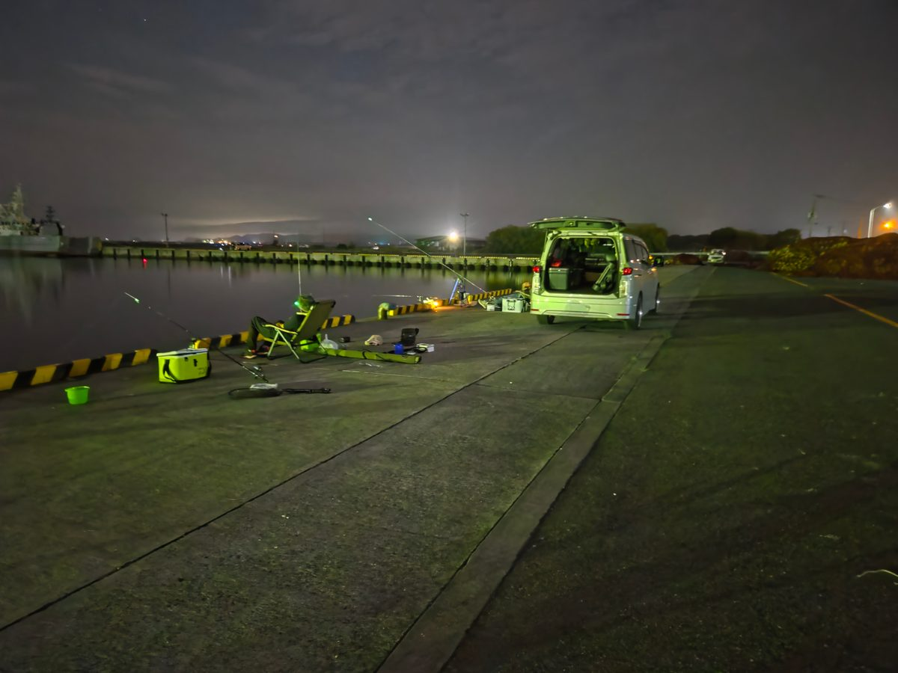
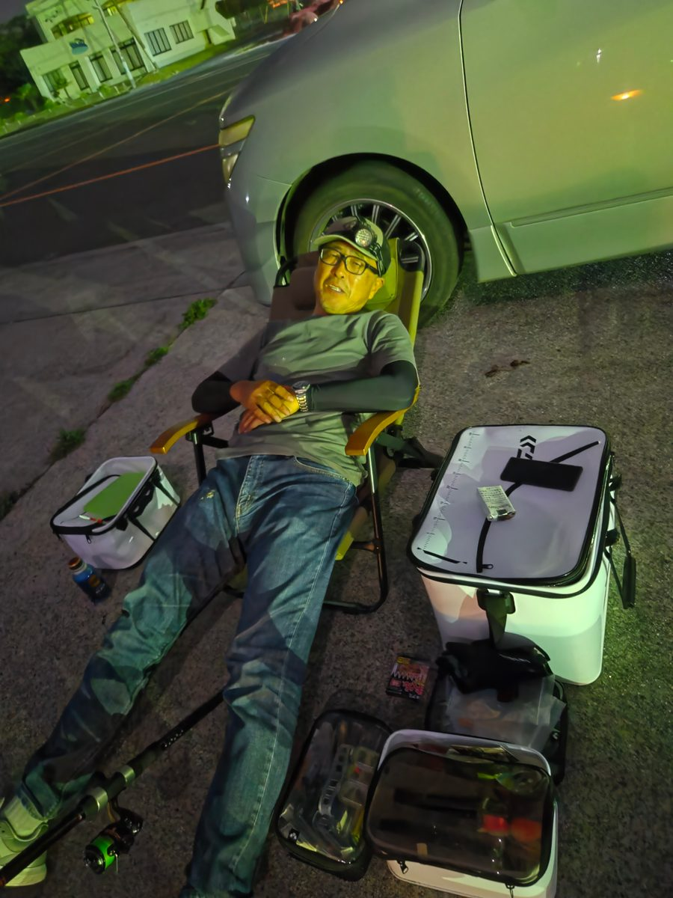
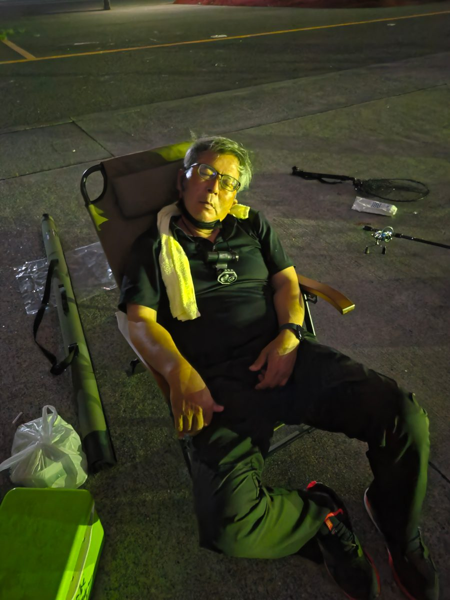
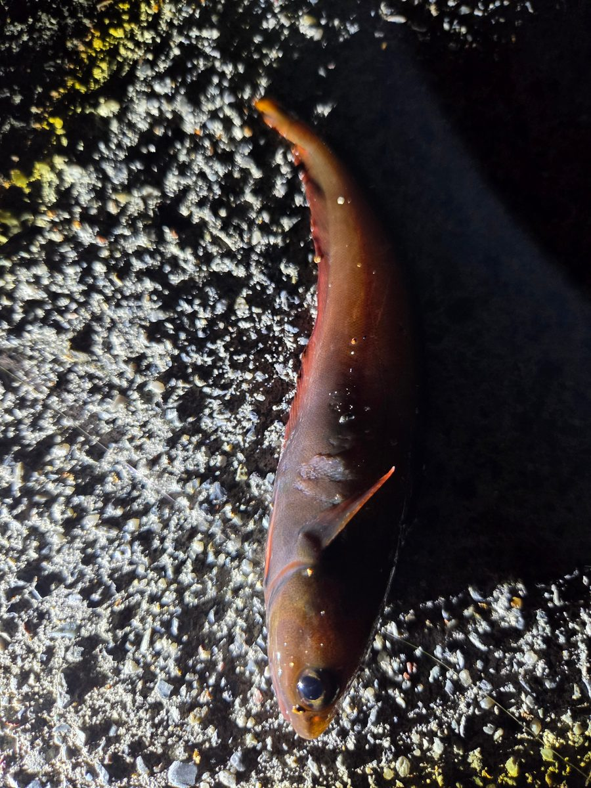
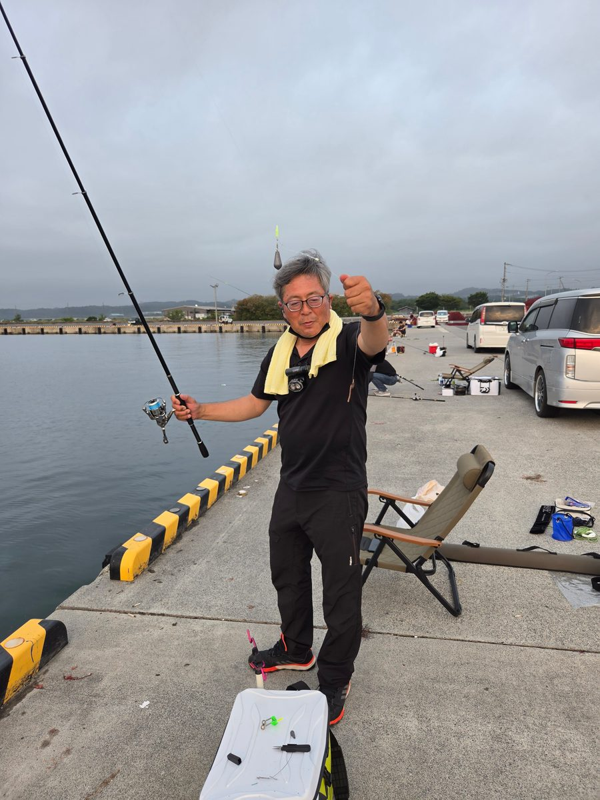
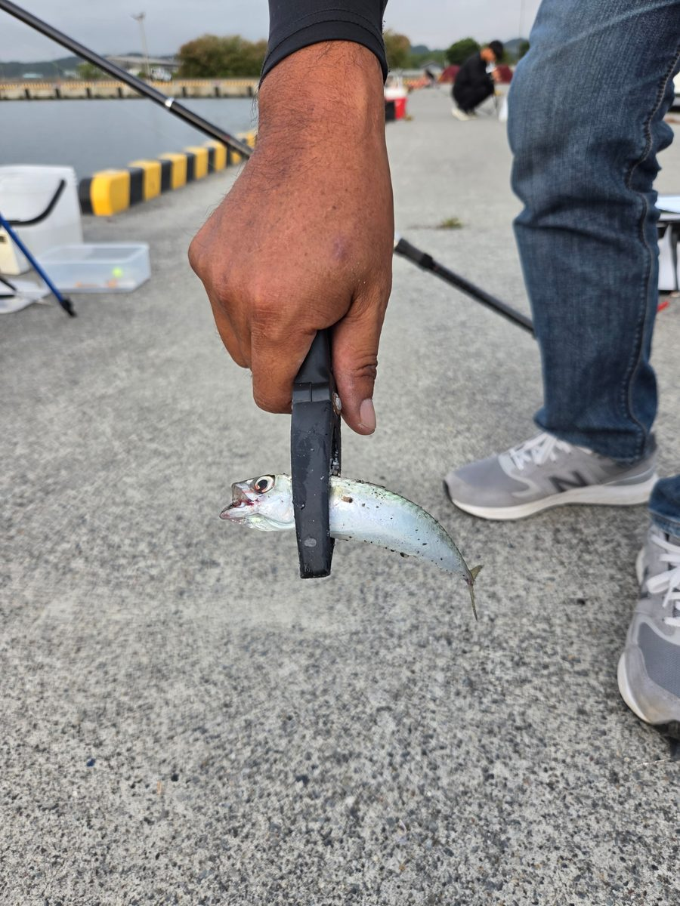
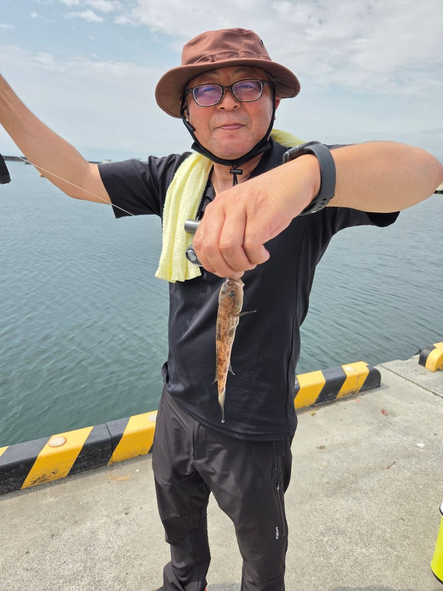
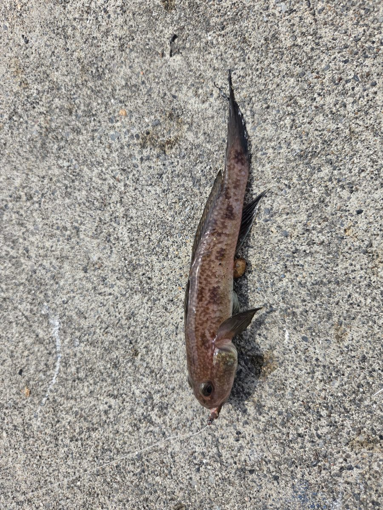
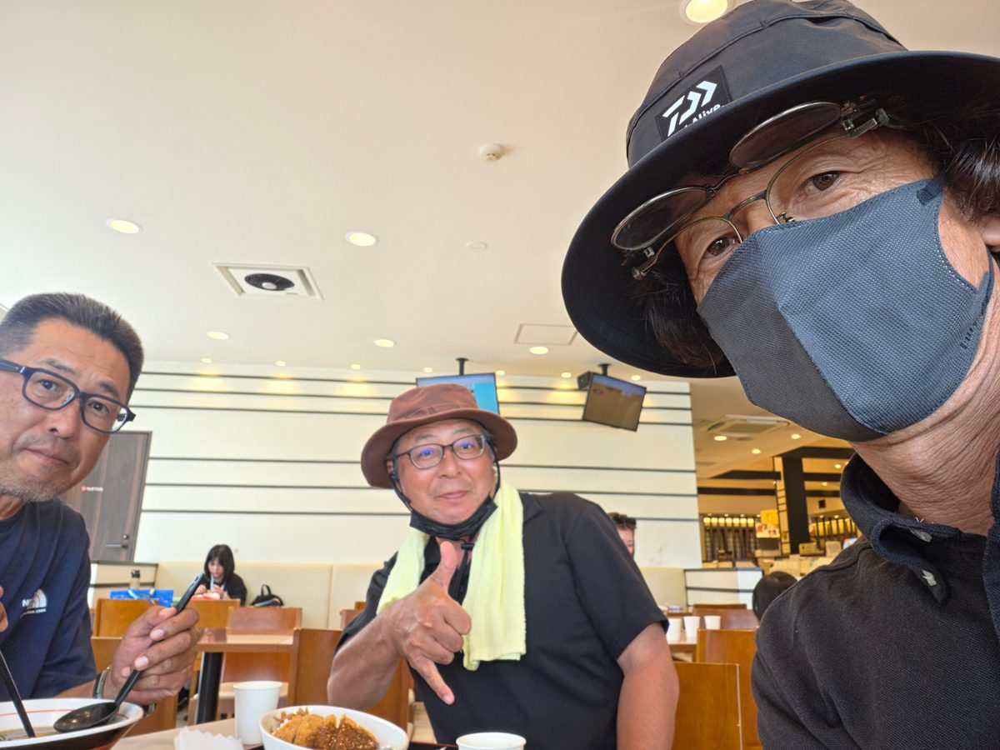
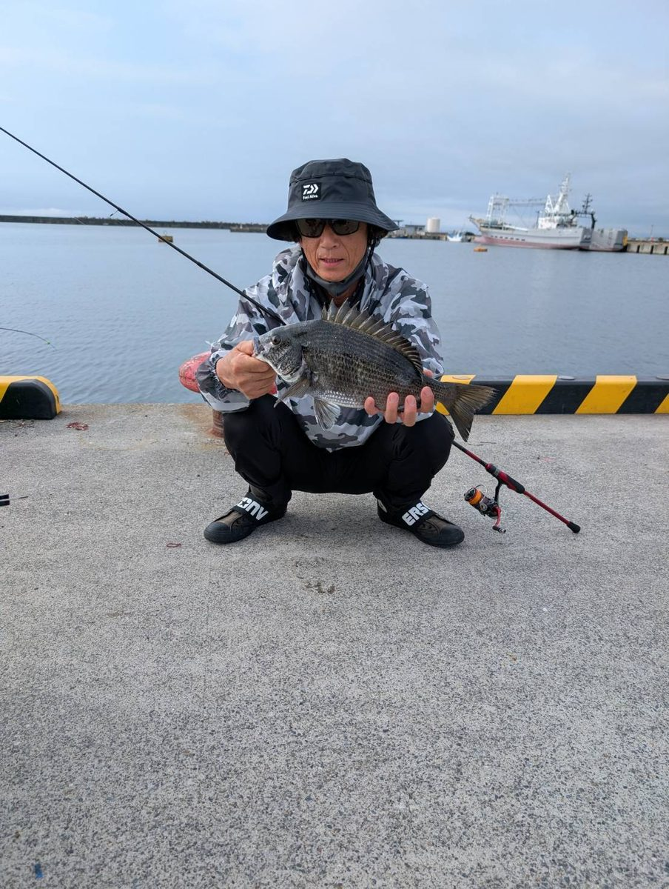
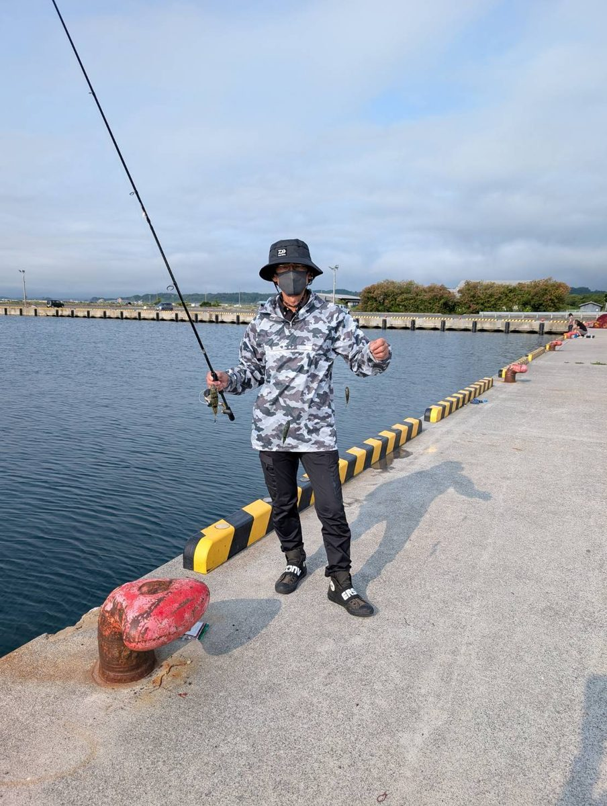
打ち上げ🍛 友部PAGOURMET
11時に納竿し、帰路は常磐道・友部PAへ寄り道。三人それぞれの選択。
友部PAにて。カツカレーは減量宣言2日目の勇者ワカグリ
- 🍛 ガキオヤRin — カレー
- 🍛 勇者ワカグリ — カツカレー
- 🍜 ナナヌマ会長 — ラーメンチャーハンセット
- 🐟 締め：お好み焼き風たい焼き（友部PA名物）
総括・反省点REVIEW
今回の結果
1位 ガキオヤRin 22pt ／ 2位 ナナヌマ会長 10pt ／ 3位 勇者ワカグリ 5pt
反省点
満潮とマズメが重なる最高の時間帯、水面のモジりが示す通り魚は間違いなく居た。にもかかわらず、こちらからは何の反応も得られなかった。
問題は釣れなかったことではなく、足掛かりを一つも見つけられなかったこと。サビキに反応がない時点で、もっと早く別のリグ・別のレンジ・別の仕掛けを試すべきだった。手数の少なさが、そのまま結果に出た。
次回は「効かない」と判断するまでの時間を短くし、引き出しを増やして臨む。
次回への申し送り
- マズメ用の代替リグを事前に複数用意しておく
- 生ミックの有効性は実証済み。再入手を検討
- ワカグリの減量期限：2027.02.01（経過観察中）